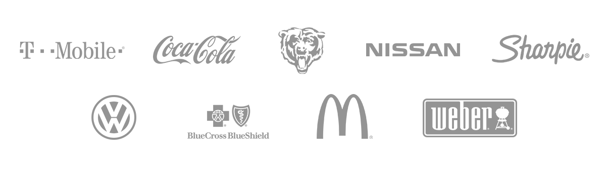

I can help you connect with your users.
Focus on who’s important, and nothing else.
An oportunity to have a new relationship,
or keep an old one.
My name is Lyle Rohr, and I am an Experience Designer and Front End Developer.
Over the past 12 years, I have honed my skills through experience in advertising agencies and a startup here and there, mainly focusing on communication strategy and user experience design. I've worked with some of the brightest minds to bring experiences to life for some of the biggest brands.
Here are a couple of ways to get to know me, but the best is to get in touch.
My Resume My PortfolioMy expertise spans the gap between concept and execution. I thrive as a big thinker, but my sleeves are already rolled up so we can get down to business.
All we create is designed to be used by a person, your grandmother, a potential customer, your clients. Creating experiences is more than happenstance when designed with someone in mind. It's not just a mobile app, it's a real part of their life.
Whether you need a 30 day promotion, or an enterprise-level intranet, it all starts with a need. Ideas are never born fully formed. The best ideas are honed by a group of like-minded individuals over time. I help bring ideas to the table aimed at achieving your goals.
Ushering a concept into reality often takes some explanation, some convincing, and a way to help visualize what it could be. Taking a concept from idea to reality is one of my specialties.
From tiny projects to massive ones, sketches, user flows, wireframes, and prototypes provide a more precise view of what your experience should be, and maybe more importantly, what it shouldn't be.
Wireframes are the bones of an experience, but user interface design is what makes it really come to life. Colors and shapes fill our eyes with emotion which help our users connect with your brand.
HTML, CSS3, and JavaScript are the language of the web these days. Not only can I develop your new app, having a firm grasp on how the online world works helps keep the ideation process grounded, budgets on track, and experiences as great as they can be.
Here are some of the clients I've been lucky enough to work with.
A selection of my work that I’m most proud of.
The T-Mobile Tuesdays program is a sincere customer appreciation app with some serious, Un-Carrier style giveaways.
Some of the mechanisms of the app are complex and new to users. It was my job to help keep the experience intuitive and engaging.
Client: T-Mobile
Agency: The Marketing Store
Service: User Experience Design
The McDonald's Create Your Taste experience is part of a larger campaign to change the greater McDonald's experience through new technology and services. The web and mobile web portion of the project was won by The Marketing Store.
My involvement with this project was 2 fold, I was the lead Digital Strategist as well as the UX Designer. A helpful pairing when it comes to creating a web experience.
Client: McDonald's
Agency: The Marketing Store
Service: Digital Strategy, User Experience Design
Universal Forest Products, Inc. was looking to reinvent their online image with a forward-thinking design that would translate gracefully from smaller to larger screens.
My goal with UFP was to create a real personality that users could sense while still keeping a professional, corporate feel. Utilizing UFP's existing branding and incorporating modern design principles, we were able to achieve a sleek look and feel which handles large and small screens gracefully.
Client: Universal Forest Products, Inc.
Agency: SSXD, Inc.
Service: User Interface Design, User Experience Design
Arteasan Teas is a startup bottled drink brand based out of New York City. It's main competitor is Bai5, another ready-to-drink bottled drink.
For this project, my role was primarily UX and digital strategy. I created the basic online strategy as well as the wireframes for the responsive web site.
Client: Arteasan
Agency: The Marketing Store
Service: Digital Strategy, User Experience Design